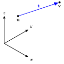
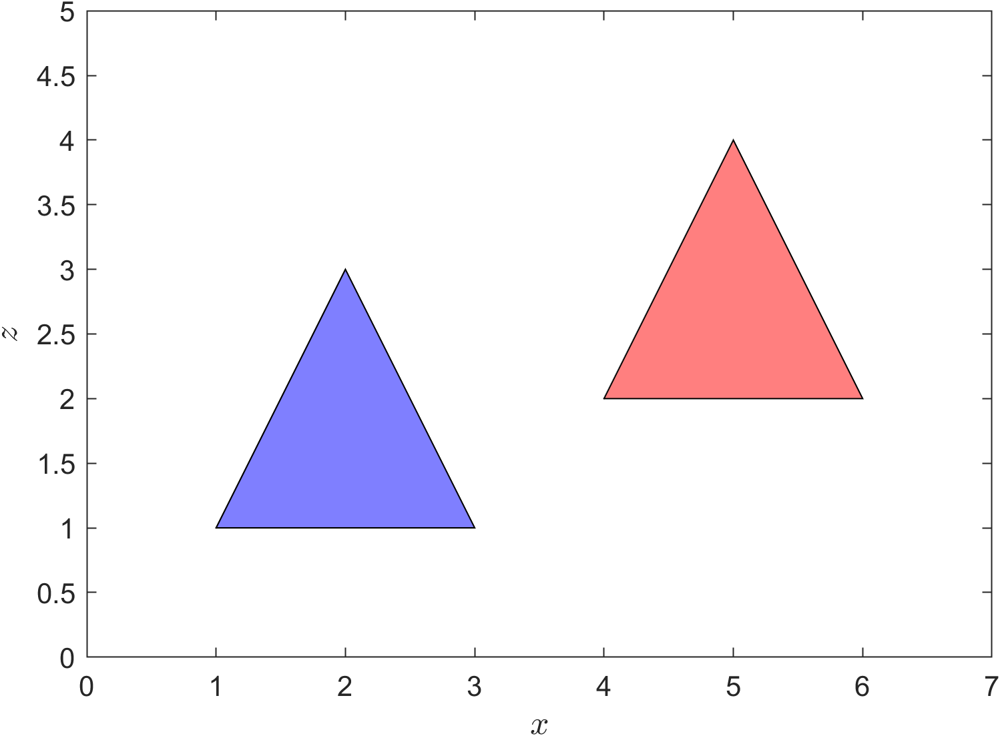

Translation
Contents
Translation#
Translation is a linear transformation that moves a set of points by the vector \(\mathbf{t}\) (Fig. 31).
{kind=link}

Fig. 31 The translation of a point \(\mathbf{u}\) by the translation vector \(\mathbf{t}\) to the point \(\mathbf{v}\)#
Using vector addition it is easy to see that
To represent translation using a single transformation matrix we need a matrix \(T(\mathbf{t})\) that satisfies
Unfortunately the matrix \(T(\mathbf{t})\) does not exist which is independent of \(u_1\), \(u_2\) and \(u_3\) so we can use a trick which makes use of homogeneous co-ordinates.
Definition 19 (Homogeneous co-ordinates)
The homogeneous co-ordinates of a point \(\mathbf{u}\) in \(\mathbb{R}^3\) expressed using the Cartesian co-ordinates is the 4-tuple \((w x, w y, w z, w)\) where \(w \in \mathbb{R}\backslash \{0\}\).
Note that a point with homogeneous co-ordinates \((x, y, z, 1)\) has the Cartesian co-ordinates \((x, y, z)\).
If \(\mathbf{u}= (u_x, u_x, u_y, 1)\) expressed using homogeneous co-ordinates then the translation by the translation vector \(\mathbf{t} = (t_x, t_y, t_z)\) is
which can be written as the matrix equation
The square matrix is the transformation matrix for translating a point of set of points by the translation vector \(\mathbf{t}\).
Definition 20 (Translation matrix)
The transformation matrix for the translation of a vector in \(\mathbb{R}^3\) expressed using homogeneous co-ordinates by the translation vector \(\mathbf{t} = (t_x, t_y, t_z)\) is
The transformation matrix for inverse translation is
Example 23
A triangle is defined by three points with position vectors \(\mathbf{p}_1 = (1, 0, 1)\), \(\mathbf{p}_2 = (3, 0, 1)\) and \(\mathbf{p}_3 = (2, 0, 3)\). The triangle is translated by the translation vector \(\mathbf{t} = (3, 0, 1)\). Calculate the positions of the triangle vertices of the translated triangle.
Solution
The homogeneous co-ordinate matrix is
and the translation matrix is
Applying the transformation
So the vertex co-ordinates of the translated triangle are \((4,0,2)\), \((6, 0, 2)\) and \((5, 0, 4)\). The original triangle and the translated triangle are plotted in Fig. 32 looking along the \(y\)-axis.
MATLAB code#
The following MATLAB code applies the translation from Example 23 and plots the original and translated polygons.
% Define homogeneous co-ordinate matrix
P = [ 1, 3, 2 ;
0, 0, 0 ;
1, 1, 3 ;
1, 1, 1 ];
% Define translation matrix
T = @(t) [ 1, 0, 0, t(1) ;
0, 1, 0, t(2) ;
0, 0, 1, t(3) ;
0, 0, 0, 1 ];
% Apply translation
t = [3 ; 0 ; 1];
P1 = T(t) * P;
% Plot polygons
figure
patch(P(1,:), P(3,:), 'b', FaceAlpha=0.5)
patch(P1(1,:), P1(3,:), 'r', FaceAlpha=0.5)
axis equal
axis([0, 7, 0, 5])
xlabel("$x$", FontSize=12, Interpreter="latex")
ylabel("$z$", FontSize=12, Interpreter="latex")
box on
{kind=link}

Fig. 32 Translating a polygon.#